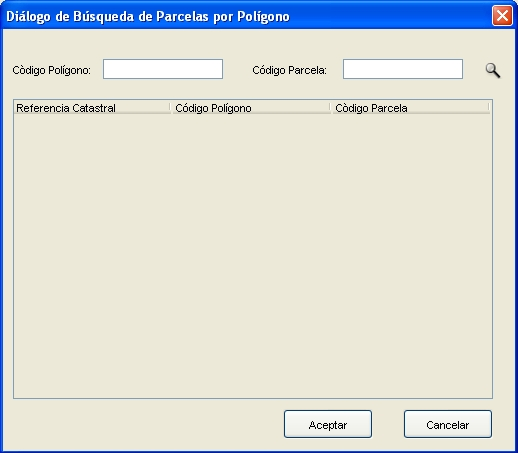

Cuando el usuario crea un expediente relativo a Fincas y datos físico económicos, la interfaz de asociación le permitirá realizar la búsqueda de dichas parcelas mediante la referencia catastral, la dirección de dicha parcela y mediante la selección directa de la parcela sobre el mapa desplegado.
En caso de asociar la parcela por referencia catastral, al pinchar sobre el icono de búsqueda el usuario debe introducir en la nueva pantalla, parte o toda la referencia catastral de la parcela y seleccionar una de los resultados como se muestra a continuación.

En caso de asociar la parcela mediante los datos de localización, el usuario debe introducir parte o todos los datos de la dirección de la parcela y seleccionar una de los resultados como se muestra en la siguiente pantalla.

En caso de asociar la parcela mediante los datos de poligono, el usuario debe introducir parte o todos los datos del poligono y la parcela y seleccionar una de los resultados como se muestra en la siguiente pantalla.

Por ultimo en caso de seleccionar la parcela
directamente sobre el mapa, se debe utilizar el icono  y pinchar sobre la parcela deseada. A continuación se debe referenciar dicha parcela mediante el botón
y pinchar sobre la parcela deseada. A continuación se debe referenciar dicha parcela mediante el botón
 y de esta forma asociarla al expediente como se muestra a
continuación.
y de esta forma asociarla al expediente como se muestra a
continuación.

Cuando el usuario necesite crear un expediente de cambios de titularidad relativo a Bienes Inmuebles la interfaz de asociación le permitirá realizar la búsqueda de dichos datos mediante la referencia catastral, la dirección tributaria del Bien Inmueble en cuestión, el poligono o parcela, y mediante el NIF del titular de dicho Bien. En caso de asociar la parcela por referencia catastral, al pinchar sobre el icono de búsqueda el usuario debe introducir en la nueva pantalla parte o toda la referencia catastral de la misma forma que en la asociación por parcelas, seleccionando finalmente un Bien Inmueble de los resultados.
En caso de asociar el bien inmueble mediante los datos de localización, el usuario debe introducir parte o todos los datos de la dirección del bien, de manera similar a la asociación por parcelas y seleccionar uno de los resultados de la lista.
En caso de asociar el bien inmueble mediante los datos de poligono o parcela, el usuario debe introducir parte o todos los datos del poligono o parcela, de manera similar a la asociación por parcelas y seleccionar uno de los resultados de la lista.
Por último en caso de seleccionar el bien inmueble mediante el NIF del titular, el procedimiento es el mismo y el usuario debe introducir parte o todos los dígitos del NIF y seleccionar uno de los resultados de la lista.
Una vez asociados todos los bienes inmuebles o las parcelas al expediente, se guardaran todos los datos del mismo en la base de datos pulsando en el botón "Guardar" y se mostrara la pantalla de Gestión del Expedientes.
NOTA: Al asociar datos a un expediente en el Modo Acoplado se produce un intercambio de información con la OVC con el objetivo de comunicar la el conjunto de datos que estarán afectados por un expediente en particular. Este intercambio se realiza en modo simulación y por tanto el fichero XML generado para dicho fin puede consultarse en la ruta: GeoPISTA/Datos/CrearExpediente.xml